Basics#
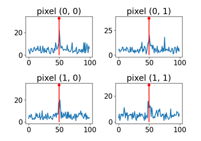
Single photon lidar operator for depth ranging.
Single photon lidar operator for depth ranging.
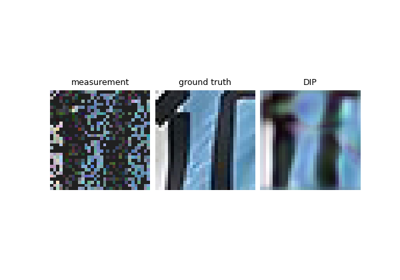
Reconstructing an image using the deep image prior.
Reconstructing an image using the deep image prior.
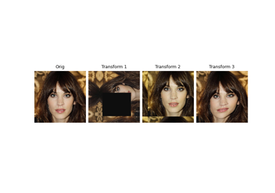
Image transforms for equivariance & augmentations
Image transforms for equivariance & augmentations
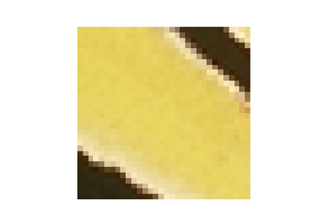
Creating your own dataset
Using huggingface dataset
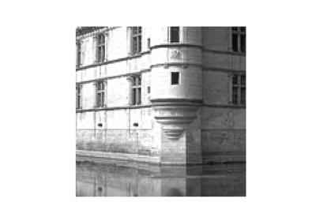
Ptychography phase retrieval
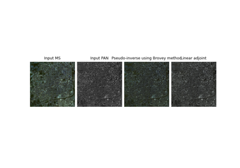
Remote sensing with satellite images
Remote sensing with satellite images
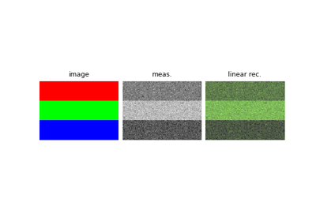
Creating a forward operator.
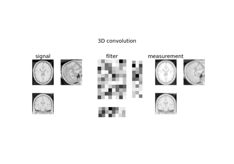
3D diffraction PSF

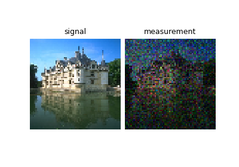
A tour of forward sensing operators
A tour of forward sensing operators
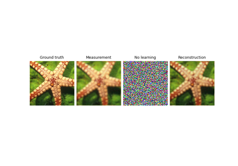
Image deblurring with custom deep explicit prior.
Image deblurring with custom deep explicit prior.

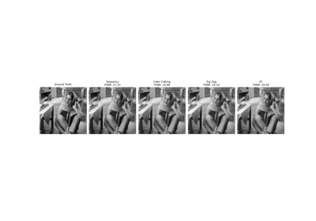
Pattern Ordering in a Compressive Single Pixel Camera
Pattern Ordering in a Compressive Single Pixel Camera
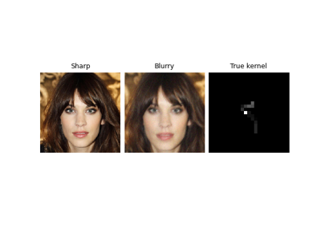
Solving blind inverse problems / estimating physics parameters
Solving blind inverse problems / estimating physics parameters
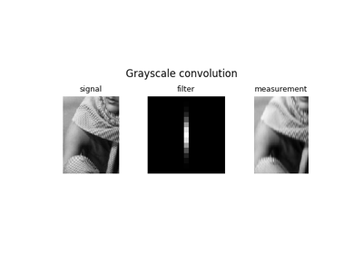
A tour of blur operators
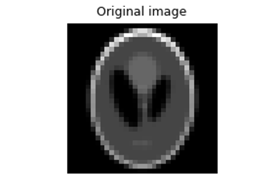
Random phase retrieval and reconstruction methods.
Random phase retrieval and reconstruction methods.
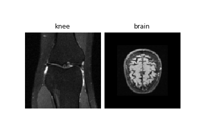
Tour of MRI functionality in DeepInverse
Tour of MRI functionality in DeepInverse
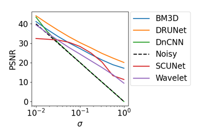
A tour of DeepInv's denoisers